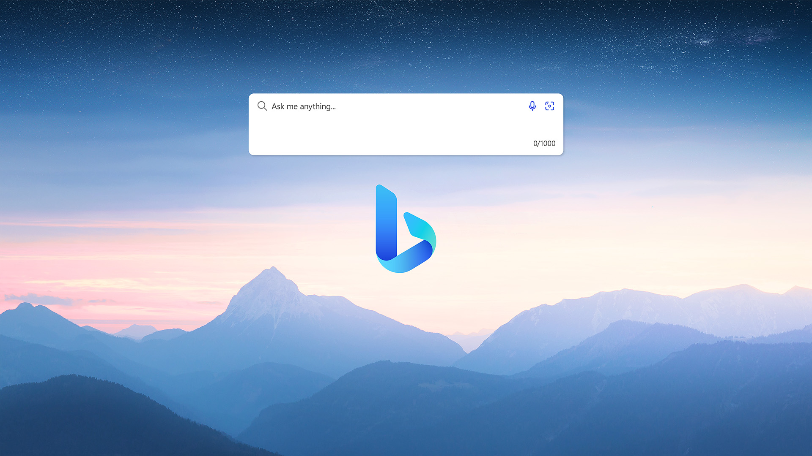
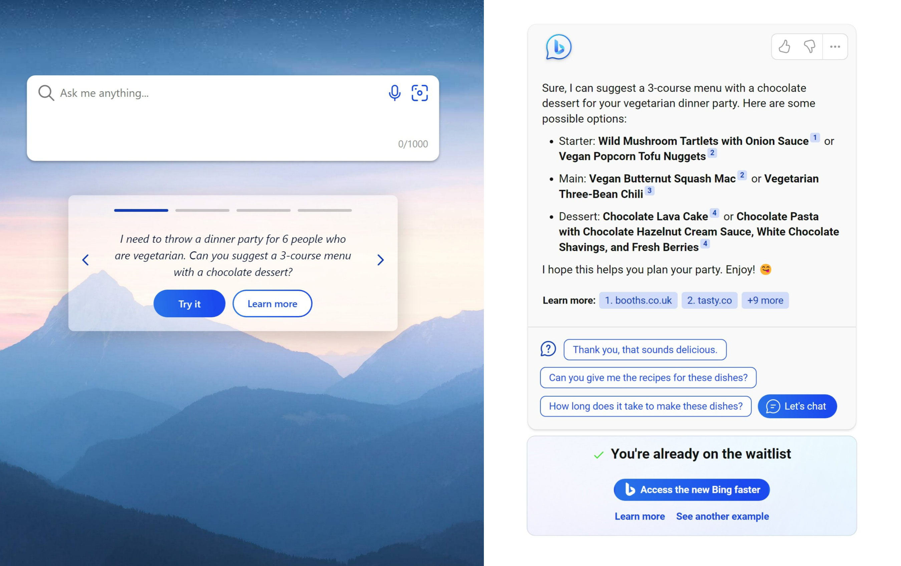
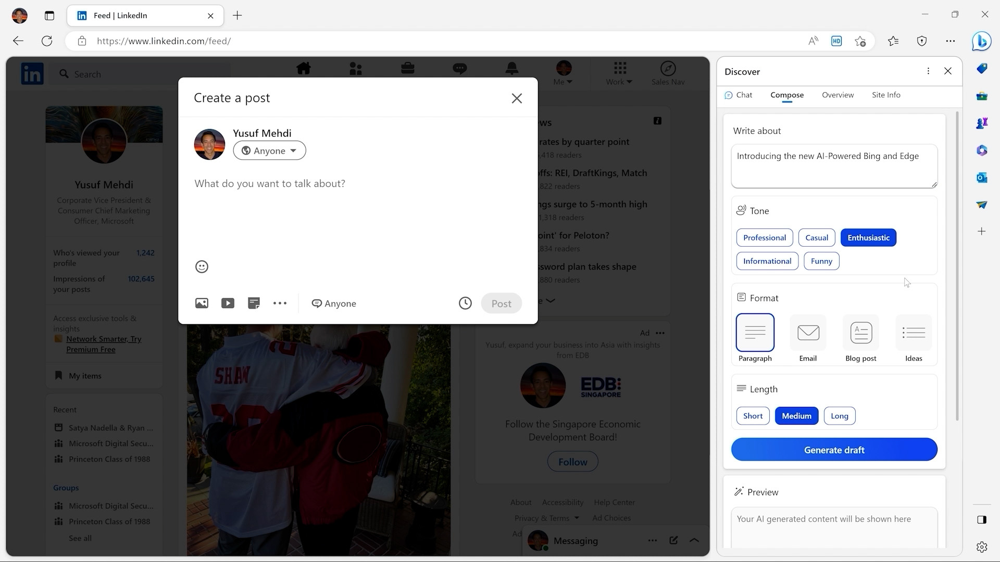

Bringing intelligence next gen with Bing

Microsoft announced yesterday, 7th February 2023, a brand-new AI-powered Bing and Edge delivering their next-generation of the search engine and browser, the tools used by billions of people to harness the web, that will intelligently empower people to discover more of the world's knowledge and improve how people benefit from the web, available in preview at bing.com/new
“AI will fundamentally change every software category, starting with the largest category of all - search”
Reinventing search with a new AI-powered Bing and Edge, your copilot for the web
Bing will deliver an improved version of the search experience to help provide more relevant results along with a new sidebar that helps bring comprehensive answers when needed, where results are summarised to provide the answer you are looking for without having to go through many results. Bing also brings intelligence with an interactive chat which allows you to refine what you are looking for, by providing more details and clarify to find exactly what you need and provide the links allowing you to go further with the results. Bing can also provide more next generation features by generating content to help you write what you need along with citing all sources to find out more about what has been referenced.
New Bing

Bing is powered by the next-generation OpenAI model that is even more powerful than that used by ChatGPT and has been specifically tailored for search and include advancements and learnings from ChatGPT to provide more capabilities, more accurate responses and faster responses. Bing also uses a proprietary method of leveraging the power of the OpenAI model known as the Prometheus model to help deliver fast and relevant results with improved safety against harmful content. Bing also applies the AI model to the core search engine ranking engine to deliver the biggest leap in result relevance in two decades so that even basic searches are more relevant and accurate.
New Edge

Edge has also been updated with new AI features including chat and compose, from the Edge sidebar it can summarise or even help create content and can use the web page you are on to adapt any responses. With Edge search and chat are pulled into a unified experience to help unlock the next generation way of interacting with the web.